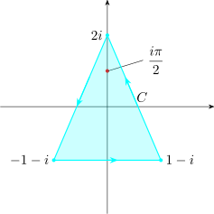
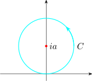

Theorem (Cauchy Integral Formula)
If \(f(z)\) is analytic in a simply connected domain \(D\) containing a simple closed contour \(C\) and \(z_0\) is any point in
the interior of \(C\), then
\[ f(z_0) = \dfrac {1}{2\pi i} \int _C \dfrac {f(z)}{z - z_0}dz\]
Example
Evaluate \(\displaystyle {\int _C \dfrac {ze^{-z}}{z - \dfrac {i \pi }{2}}dz},\hspace {0.2cm}\) where \(C\) is the triangle with vertices \(\hspace {0.2cm} -1-i, \hspace {0.2cm} 1 - i, \hspace {0.2cm} 2i\)
Solution

Take \(f(z) = z e^{-z}, \hspace {0.3cm} z_0 = \dfrac {i\pi }{2}\) \begin {align*} \int _C \dfrac {ze^{-z}}{z - \dfrac {i \pi }{2}}dz & = 2\pi i \cdot ze^{-z}\Big |_{z = i\dfrac {\pi }{2}}\\ & = 2\pi i \cdot \dfrac {i \pi }{2}e^{-i\pi / 2}\\ & = -\pi ^2\\\\ \end {align*}
Exercise
Evaluate \(\displaystyle {\int _C \dfrac {e^{-z}}{z^3 + 2z^2 - 3z - 10}}dz\hspace {0.1cm}\), where \(C\) is the triangle with vertices \(\hspace {0.2cm} i, \hspace {0.2cm} -i, \) and \(3\).
Example
Evaluate \(\displaystyle {\int _C \dfrac {e^{iz}}{z^2 + a^2}dz\hspace {0.2cm}, \hspace {0.2cm}}\) where \(C\) is the circle \(\begin {vmatrix} z - ia\\ \end {vmatrix} = a, \hspace {0.3cm} a\in \mathbb {R}\).
Solution
\(z^2 + a^2 = (z - ia) (z + ia)\), hence singular points at \(z = ia\) and \(z = -ia\)

\(ia\) lies in the interior of \(C\), \begin {align*} \int _C \dfrac {e^{iz}}{z^2 + a^2}dz & = \int _C \dfrac {e^{iz}}{(z - ia)(z + ia)}dz\\\\ & = \int _C \dfrac {e^{iz}/z + ia}{z - ia} dz\\\\ & = 2\pi i \cdot \dfrac {e^{iz}}{z + ia}\Bigg |_{z = ia}\\\\ & = \dfrac {2\pi i \cdot e^{-a}}{2ia}\\\\ & = \dfrac {\pi }{ae^a}\\\\ \end {align*}
Suppose we used the Cauchy Gaursat \begin {align*} \int _C \dfrac {e^{iz}}{z^2 + a^2}dz & = \int _c \dfrac {e^{iz}}{(z - ia) (z + ia)}dz\\\\ & = \int _C \dfrac {A}{z - ia}dz + \int _C \dfrac {B}{z + ia}dz\\ \end {align*}
\[e^{iz} = A(z + ia) + B(z - ia)\]
Let \(z = ia, \hspace {0.3cm} e^{-a} = 2aiA \implies A= \dfrac {1}{2iae^a}\)
Let \(z = - ia, \hspace {0.3cm} e^a = -2iaB \implies B = \dfrac {-e^a}{2ia}\)
\begin {align*} \int _C \dfrac {e^{iz}}{z^2 + a^2}dz & = \int _C \dfrac {e^{iz}/2iae^a}{z - ia}dz + \underbrace {\int _C \dfrac {-e^{a}/2ia}{z + ia}dz}_0\hspace {0.3cm}\text {since}\hspace {0.2cm}\dfrac {e^{-a}/2ia}{z + ia}\hspace {0.3cm} \text {is analytic inside}\hspace {0.2cm}C\\\\ & = \dfrac {1}{2iae^a}\int _C \dfrac {1}{z - ia}dz\\\\ & = \dfrac {1}{2iae^a}\cdot 2\pi i\\\\ & = \dfrac {\pi }{ae^a}\\\\ \end {align*}
Exercise
The Cauchy Integral Formula Applied to Integrals of Trigonometric Functions
One of the applications of the Cauchy integral formula is the evaluation of real integrals of the
form
\[I = \int ^{2\pi }_0 F\big (\sin x, \cos x\big ) dx\]
In which the integrad is the quotient of two polynomials in \(\sin x\) and \(\cos x\), i.e
\[\int \dfrac {1}{2 + \cos x}\hspace {0.1cm}dx \hspace {0.5cm}, \hspace {0.5cm} \int \dfrac {1}{a^2 + \sin ^2 x}\hspace {0.1cm}dx\]
The approach is as follows:
where \(w = e^{ix}\)
Example
Use the Cauchy integral formula to evaluate \(\displaystyle {I = \int ^{2\pi }_0 \dfrac {dx}{3 + 2\sin x}}\)
Solution
Step 1 to 3: Substitute \(\hspace {0.2cm}\displaystyle { \sin x = \dfrac {1}{2i}\Big (w - \dfrac {1}{w}\Big )\hspace {0.5cm} , \hspace {0.5cm} dx = \dfrac {1}{wi}\hspace {0.1cm}dw}\)
\begin {align*} \therefore \hspace {0.3cm} \int _C \dfrac {1/wi \hspace {0.2cm}dw}{3 + 2\Big [\dfrac {1}{2i}\Big (w - \dfrac {1}{w}\Big )\Big ]} & = \int _C \dfrac {dw}{wi\Big [3 + 2\Big [\dfrac {1}{2i}\Big (w - \dfrac {1}{w}\Big )\Big ]\Big ]}\\\\\ & = \int _C \dfrac {dw}{w^2 + 3iw - 1}\\\\ & = \int _C \dfrac {dw}{\Big [w + \dfrac {1}{2}\Big (3 + \sqrt {5}\Big )i\Big ]\Big [w + \dfrac {1}{2}\Big ( 3 - \sqrt {5}\Big )i\Big ]}\\ \end {align*}
The zeros of the denominator are at \(w = -\dfrac {1}{2}(3 + \sqrt {5})i\) and \(w = -\dfrac {1}{2}(3 - \sqrt {5})i\)
But only \(-\dfrac {1}{2}\big (3 - \sqrt {5}\big )i\) is inside \(\begin {vmatrix} w\\ \end {vmatrix} = 1\).
\begin {align*} \therefore \hspace {0.5cm} I & = \int _C \dfrac {1}{\Big [3 + \dfrac {1}{2}\Big (3 + \sqrt {5}\Big )i\Big ]\Big [w + \dfrac {1}{2}\Big (3 - \sqrt {5}\Big )i\Big ]}\\\\ & = \int _C \dfrac {1/\Big [w + \dfrac {1}{2}\Big (3 + \sqrt {5}\Big )i\Big ]}{w + \dfrac {1}{2}\Big (3 - \sqrt {5}\Big )i}\\\\ & = 2\pi i\cdot \dfrac {1}{w + \dfrac {1}{2}\Big (3 - \sqrt {5}\Big )i}\Bigg |_{w = -\dfrac {1}{2}\Big (3 + \sqrt {5}\Big )}i\\\\ & = 2\pi i\cdot \dfrac {1}{-\dfrac {1}{2}\Big (3- \sqrt {5}\Big )i + \dfrac {1}{2}\Big (3 + \sqrt {5}\Big )i}\\\\ & = \dfrac {2\pi }{\sqrt {5}}\\\\ \end {align*}
Exercise
Evaluate by means of contour integration
Theorem: (The Cauchy Integral Formula for Derivatives
Let \(f(z)\) be analytic inside a smooth domain \(D\) and let \(C\) be a simple closed contour inside \(D\). Then if \(z_0\) lies
within \(C\), then
\[f^n(z_0) = \dfrac {n!}{2\pi i}\int _C \dfrac {f(z)}{\big (z - z_0\big )^{n+1}}\hspace {0.1cm}dz\]
Proof
We first prove that for \( n =1\), this holds. Starting from the Cauchy integral formula,
\[f(z_0) = \dfrac {1}{2\pi i}\int _C\dfrac {f(z)}{z - z_0}dz\]
The differential gives the following \begin {align*} \dfrac {f(z_0 + h) - f(z_0)}{h} & = \dfrac {1}{2\pi i h}\Bigg [ \int _C \dfrac {f(z)}{z - z_0 - h}dz - \int _C \dfrac {f(z)}{z - z_0}dz\Bigg ]\\\\ & = \dfrac {1}{2\pi i}\int _C \dfrac {f(z)}{h}\hspace {0.1cm}\Bigg [\dfrac {1}{z - z_0 - h}- \dfrac {1}{z - z_0}\Bigg ]dz\\\\ & = \dfrac {1}{2\pi i}\int _C \dfrac {f(z)}{\big [z - z_0 - h\big ]\big [z-z_0\big ]}dz \end {align*}
\(f(z)\) is analytic, so its derivatives exist. We have \[\lim \limits _{h\rightarrow 0}\Bigg [\dfrac {f(z_0 + h) - f(z_0)}{h}\Bigg ] = \lim \limits _{h\rightarrow 0}\Bigg [\dfrac {1}{2\pi i}\int _C \dfrac {f(z)}{\big (z - z_0 - h\big )\big (z - z_0\big )}\hspace {0.1cm}dz\Bigg ]\]
Hence \(\displaystyle {f'(z_0) = \dfrac {1}{2\pi i}\int _C \dfrac {f(z)}{\big (z - z_0\big )^2}\hspace {0.1cm}dz}\)
Assume it is true for \(n=k\), and then use the case for \(n = 1\) and our assumption to show that it holds for \(n=k + 1\) \[f^k(z_0) = \lim \limits _{h\rightarrow 0} \dfrac {f^{k-1}(z_0 + h) - f^{k-1}(z_0)}{h}\]
\begin {align*} \text {Hence},\hspace {0.5cm} \dfrac {f^k(z_0 + h) = f^k(z_0)}{h} & = \dfrac {k!}{2\pi hi}\Bigg [\int _C \dfrac {f(z)\hspace {0.1cm}dz}{\big (z - z_0 - h\big )^{k+1}} - \int _C \dfrac {f(z)\hspace {0.1cm}dz}{\big (z - z_0\big )^{k+1}}\Bigg ]\\\\ & = \dfrac {k!}{2\pi i}\Bigg [\int _C\dfrac {f(z)}{h}\Bigg (\dfrac {1}{\big (z - z_0 -h\big )^{k+}} - \dfrac {1}{\big (z -z_0\big )^{k+1}}\Bigg )dz\Bigg ] \end {align*}
Now for small \(\begin {vmatrix} h\\ \end {vmatrix}\) using the binomial theorem, we have \begin {align*} \dfrac {1}{\big [z - z_0 - h\big ]^{k+1}} -\dfrac {1}{\big [z - z_0\big ]^{k+1}} & = \dfrac {\big [z - z_0\big ]^{k+1} - \big [z - z_0 - h\big ]^{k+1}}{\big [z - z_0 -h\big ]^{k+1}\big [z- z_0\big ]^{k+1}}\\\\ & = \dfrac {\big [z - z_0\big ]^{k+1} - \Big (\big [z - z_0\big ]^{k+1}- \big (k+1\big )\big (z - z_0\big )^kh + \cdots \cdots }{\big [z - z_0 -h\big ]^{k+1}\big [z- z_0\big ]^{k+1}}\\\\ & = \dfrac {\big (k+1\big )h + Q(h^2)}{\big [z - z_0 -h\big ]^{k+1}\big [z- z_0\big ]^{k+1}}\\ \end {align*}
\begin {align*} \text {Thus}\hspace {0.4cm} \lim \limits _{h\rightarrow 0 } \dfrac {f^k(z_0 + h) - f^k(z_0)}{h} & = \lim \limits _{h\rightarrow 0}\dfrac {k!}{2\pi i}\Bigg [\dfrac {1}{h}\int _C f(z)\Bigg ( \dfrac {\big (k+1\big )h + Q(h^2)}{\big [z - z_0 -h\big ]^{k+1}\big [z- z_0\big ]^{k+1}}\Bigg )dz\Bigg ]\\\\ & = \dfrac {k!}{2\pi i}\int _C\dfrac {(k+1)\hspace {0.1cm}f(z)}{\big (z - z_0\big )^{k + 2}}\hspace {0.1cm}dz\\\\ & = \dfrac {(k+1)!}{2\pi i}\int _C\dfrac {f(z)}{\big (z - z_0\big )^{k+2}}\hspace {0.1cm}dz\\\\ & = \dfrac {(k+1)!}{2\pi i}\int _C \dfrac {f(z)}{\big (z - z_0\big )^{k+2}}\hspace {0.1cm}dz = f^{k+1}(z_0) \end {align*}
Thus it is true for \(n = k+ 1\). Hence true for all \(n\)
Example
Find \(\displaystyle {I = \int _C \dfrac {\sin ^2z\hspace {0.2cm}dz}{\Big (z^2 - \dfrac {\pi ^2}{36}\Big )\Big (z+\dfrac {\pi }{6}\Big )}}\) where \(C\) is \(\begin {vmatrix} z\\ \end {vmatrix}= 4\).
The singular points are at \(\hspace {0.1cm} z = \dfrac {\pi }{6},\hspace {0.3cm} \dfrac {-\pi }{6}\)
Now, \(\hspace {0.3cm}\dfrac {1}{\Big (z^2 - \dfrac {\pi ^2}{36}\Big )\Big (z - \dfrac {\pi }{6}\Big )} = \dfrac {A}{\Big (z + \dfrac {\pi }{6}\Big )} + \dfrac {B}{\Big (z - \dfrac {\pi }{6}\Big )} + \dfrac {C}{\Big (z - \dfrac {\pi }{6}\Big )^2}\)
\begin {align*} \text {Hence}\hspace {0.5cm} I & = \int _C \sin ^2z\Bigg (\dfrac {A}{z + \dfrac {\pi }{6}} + \dfrac {B}{z - \dfrac {\pi }{6}} + \dfrac {C}{\Big (z - \dfrac {\pi }{6}\Big )^2}\Bigg )dz\\\\ & = A\int _C\dfrac {\sin ^2z\hspace {0.2cm}dz}{z + \dfrac {\pi }{6} } + B\int _C\dfrac {\sin ^2z\hspace {0.2cm}dz}{z -\dfrac {\pi }{6}} + C\int _C\dfrac {\sin ^2z\hspace {0.2cm}dz}{\Big (z-\dfrac {\pi }{6}\Big )^2}\\\\ & = A\cdot 2\pi i \hspace {0.1cm} \sin ^2\Big (\dfrac {-\pi }{6}\Big ) + B\cdot 2\pi i\hspace {0.1cm}\sin ^2\big (\dfrac {\pi }{6}\big ) + \dfrac {C}{1!}\cdot 2\pi i\cdot \Big (\sin ^2z\Big )'\Bigg |_{z = \dfrac {\pi }{6}}\\\\ & = 2\pi i A\cdot \dfrac {1}{4} + 2\pi i B \dfrac {1}{4} + C\dfrac {\sqrt {3}}{2}\cdot 2\pi i\\\\ & = \pi i\Bigg (\dfrac {A}{2} + \dfrac {B}{2} + \sqrt {3} C\Bigg )\\\\ \end {align*}
Exercise
Mean Value Theorem
Let \(f(z)\) be analytic in a domain \(D\) containing a circular disk \(C\) of radius \(R\) centered on \(z_0\). Then
Proof:
On \(C\), we have \(z - z_0 = Re^{i\theta }\), \(\hspace {0.2cm} 0\leq \theta \leq 2\pi \) so that \(dz = iRe^{i\theta }d\theta \). Thus \begin {align*} f(z_0) & = \dfrac {1}{2\pi i} \int _0^{2\pi } \dfrac {f\Big (z_0 + Re^{i\theta }\Big )\hspace {0.1cm} iRe^{i\theta }d\theta }{Re^{i\theta }}\\\\ & = \dfrac {1}{2\pi }\int _0^{2\pi }f\Big (z_0 + Re^{i\theta }\Big )d\theta \\\\ & = \dfrac {1}{2\pi R} \int _C f\Big (z_0 + Re^{i\theta }\Big )ds\\ \end {align*}